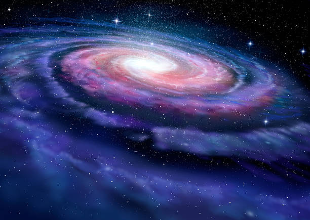

Explore Planets, Galaxies, Stars and Space Missions
About the Universe
The Universe is everything that exists around us.
It includes billions of galaxies, stars, planets,
moons, asteroids, comets and many other objects.
It also contains space and time.
The Universe began approximately 13.8 billion
years ago with an event known as the Big Bang.
Since then, it has continued to expand.
Scientists study the Universe to understand
its origin, structure and mysteries.
Earth is a very small part of this enormous
Universe. There are countless stars and planets
beyond our imagination.
Our Solar System
Our Solar System consists of the Sun, eight
planets and many other celestial objects.
The Sun is at the centre of our Solar System
and provides light and heat to the planets.
The Eight Planets
Mercury: The smallest planet and closest to the Sun.
Venus: The hottest planet in our Solar System.
Earth: Our home planet, known for supporting life.
Mars: Known as the Red Planet.
Jupiter: The largest planet in our Solar System.
Saturn: Famous for its beautiful rings.
Uranus: An ice giant that rotates on its side.
Neptune: The farthest planet from the Sun.
Planet Information
Planet
Type
Mercury
Terrestrial Planet
Venus
Terrestrial Planet
Earth
Terrestrial Planet
Mars
Terrestrial Planet
Jupiter
Gas Giant
Saturn
Gas Giant
Uranus
Ice Giant
Neptune
Ice Giant
Galaxies and Stars
A galaxy is a huge collection of stars, gas,
dust and other space objects held together
by gravity. There are billions of galaxies
in the observable Universe.
Our Solar System is located in the Milky Way
Galaxy. The Milky Way contains billions of stars,
including our Sun.
What Are Stars?
Stars are enormous glowing balls of hot gas.
They produce their own light and heat.
The Sun is the nearest star to Earth.

Famous Space Missions
Space exploration helps scientists learn
about planets, moons, stars and other objects
beyond Earth. Different countries have
launched missions to explore space.
1. Chandrayaan-3
Chandrayaan-3 was an Indian lunar mission
launched by ISRO in 2023. It successfully
landed on the Moon on 23 August 2023.
It was an important achievement for India.
2. Mangalyaan
Mangalyaan was India's Mars Orbiter Mission.
It was launched in November 2013 and reached
Mars orbit in September 2014.
3. Apollo 11
Apollo 11 was a famous NASA mission in 1969.
It successfully carried the first humans
to the surface of the Moon.
4. James Webb Space Telescope
The James Webb Space Telescope is a powerful
space telescope that observes distant galaxies,
stars and planets. It helps scientists study
the early Universe.
Astronauts and Space Exploration
Astronauts are trained people who travel
into space to conduct scientific research
and explore the Universe.
Life in space is different from life on Earth.
Astronauts experience microgravity, live inside
spacecraft or space stations and perform
experiments to understand space better.
Space exploration also helps us develop
new technologies and understand our planet.
Amazing Space Facts
Jupiter is the largest planet in our Solar System.
The Sun is approximately 150 million kilometres away from Earth.
Saturn is famous for its beautiful ring system.
The Moon is Earth's natural satellite.
Space is almost completely silent because sound needs a medium to travel.
Black holes have extremely strong gravitational fields.
Light from the Sun takes about 8 minutes and 20 seconds to reach Earth.
Conclusion
The Universe is full of mysteries waiting
to be discovered. Space exploration helps
humanity understand the world beyond Earth.
With the help of science and technology,
scientists continue to discover new things
about planets, stars and galaxies.
Exploring space is an exciting journey
that helps us understand our place
in this enormous Universe.